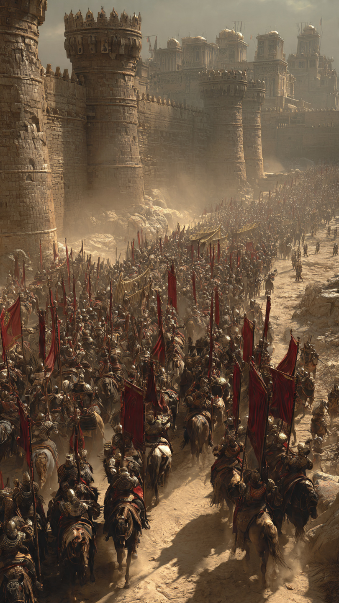
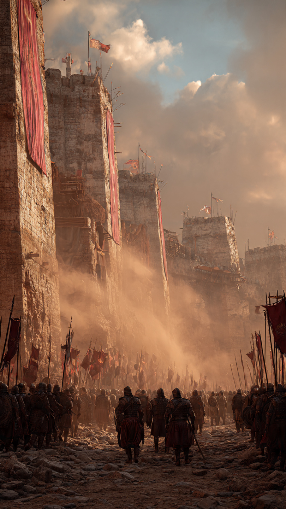

فتح عمورية.. لماذا تحرك المعتصم بجيش ضخم من أجل امرأة؟
في القرن الثالث الهجري، كانت الدولة العباسية في فترة قوة وازدهار.
وكان من أشهر خلفائها الخليفة المعتصم بالله.
كان المعتصم قائدًا قويًا، واهتم ببناء جيش منظم يحمي الدولة ويحافظ على حدودها.
وفي ذلك الزمن، كانت مدينة عمورية من أهم مدن الروم، وكانت مدينة محصنة وقوية.
بدأت قصة فتح عمورية بحادثة اشتهرت بين الناس.
فقد قيل إن امرأة مسلمة وقعت في الأسر عند الروم، ونادت مستغيثة:
"وامعتصماه"
وصل الخبر إلى المعتصم، فكان لهذا النداء أثر كبير فيه.
فقد رأى أن حماية رعيته والدفاع عن المظلوم مسؤولية عظيمة.
لم يكن الأمر مجرد معركة من أجل مدينة...
بل كان رسالة بأن القائد لا يتجاهل معاناة من يعيشون تحت مسؤوليته.
جهز المعتصم جيشًا كبيرًا، واستعد لرحلة صعبة نحو عمورية.
كانت المدينة بعيدة ومحصنة، وكان فتحها يحتاج إلى تخطيط وقوة.
تحرك الجيش العباسي نحو الروم، والكل يعلم أن المواجهة القادمة لن تكون سهلة.
أما أهل عمورية، فكانوا يثقون بقوة حصونهم، ولم يتوقعوا أن يصل المسلمون إلى أسوار مدينتهم.
لكن المعتصم كان قد اتخذ قراره...
وكان مستعدًا لخوض واحدة من أشهر المعارك في التاريخ الإسلامي.
📷 الصورة رقم 1

وصل جيش المعتصم إلى أرض الروم، وبدأ الاستعداد للحصار.
كانت عمورية مدينة قوية، تحيط بها التحصينات والأسوار، وكان فتحها يحتاج إلى صبر وخطة جيدة.
بدأ المسلمون في محاصرة المدينة، واستخدموا وسائل مختلفة لمحاولة الوصول إلى أسوارها.
كان الروم يظنون أن حصونهم ستمنع أي جيش من دخول المدينة.
فقد كانت عمورية من المدن التي اشتهرت بقوتها ومكانتها.
لكن جيش المعتصم كان منظمًا، وكان يقوده قائد لديه إصرار كبير على تحقيق هدفه.
استمر الحصار، وظهرت شجاعة الجنود وصبرهم أمام صعوبة المعركة.
كان المعتصم يتابع سير الأحداث بنفسه، ويشجع جيشه على الثبات.
ومع مرور الوقت، بدأ المسلمون يحققون تقدمًا نحو أسوار المدينة.
استخدموا التخطيط والصبر حتى استطاعوا فتح ثغرات في دفاعات عمورية.
بدأ أهل المدينة يدركون أن الحصار هذه المرة مختلف، وأن الجيش القادم لم يأتِ للتراجع.
وبعد قتال شديد، تمكن المسلمون من دخول عمورية، وسقطت المدينة بعد أن كانت تُعد من أقوى حصون الروم.
كان فتح عمورية حدثًا كبيرًا في ذلك العصر، وانتشر خبره في البلاد.
📷 الصورة رقم 2

بعد فتح عمورية، أصبح هذا الحدث من أشهر الانتصارات في عهد الدولة العباسية.
فقد رأى الناس فيه مثالًا على قوة الجيش وتنظيمه، وعلى أهمية اتخاذ القادة للمواقف الصعبة عندما يحتاج الأمر.
لكن قصة عمورية لم تكن عن القوة العسكرية فقط...
بل كانت تحمل معنى أكبر عن مسؤولية الحاكم تجاه من يتولى أمرهم.
فالقائد لا يُقاس فقط بعدد الانتصارات التي يحققها، بل بقدر اهتمامه بالعدل وحماية الناس.
وقد خلد الشعراء هذا الحدث في قصائد كثيرة، ومن أشهر من كتب عنه الشاعر أبو تمام في قصيدته عن فتح عمورية.
ومع مرور الزمن، بقي فتح عمورية حدثًا يذكره المؤرخون عند الحديث عن قوة الدولة العباسية في ذلك العصر.
وتعلمنا القصة أن اتخاذ القرار يحتاج إلى حكمة، وأن القوة عندما تُستخدم في نصرة الحق وحماية الناس تكون لها قيمة عظيمة.
كما تعلمنا أن الأحداث الكبيرة تبدأ أحيانًا بموقف صغير يلفت انتباه أصحاب المسؤولية.
فقد أصبحت صرخة استغاثة سببًا لتحرك جيش كبير، وأصبح فتح مدينة قوية صفحة مشهورة في التاريخ.
🏰📖 انتهت القصة 📖🏰
العبرة:
القائد الحقيقي يهتم بالعدل وحماية الناس، ويستخدم قوته بحكمة ومسؤولية.